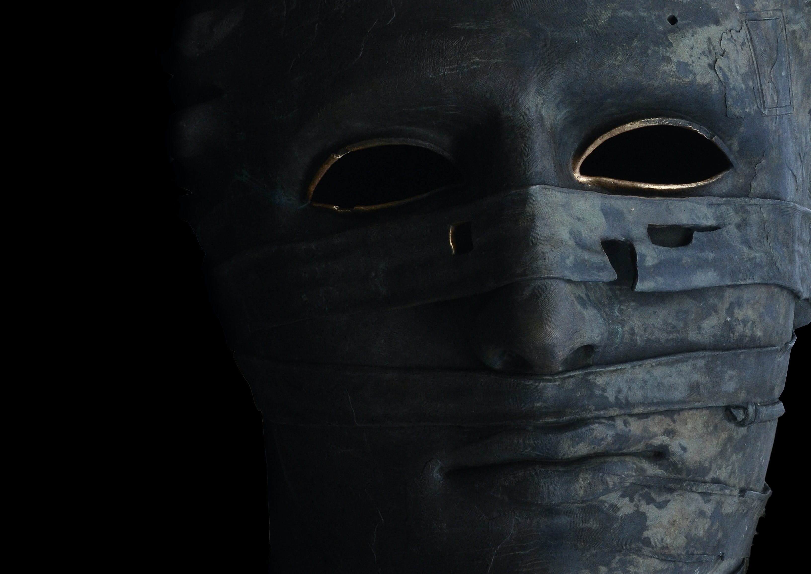
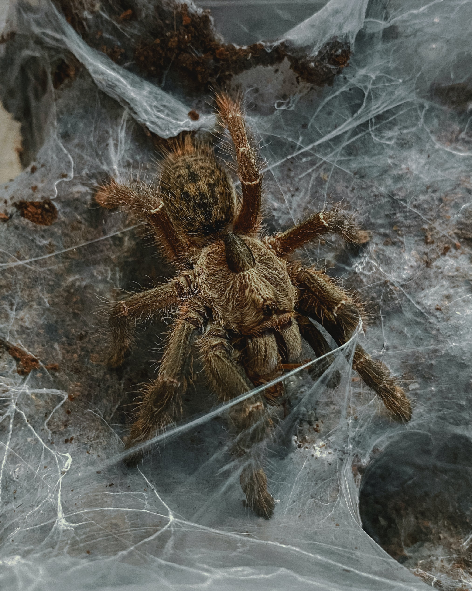
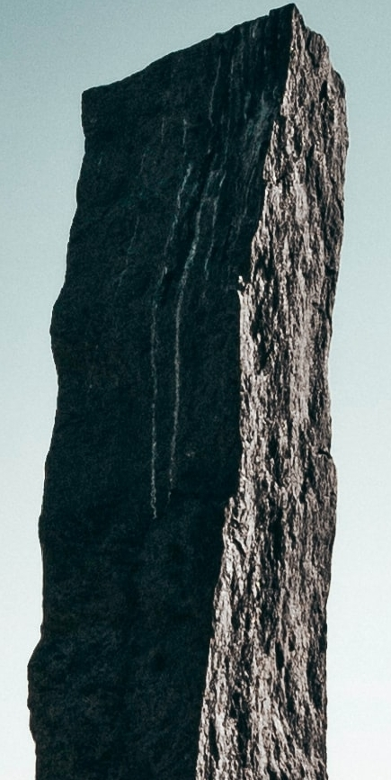
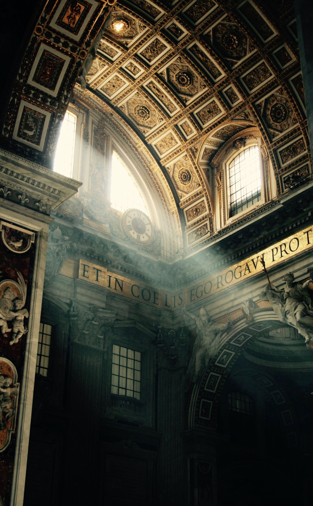
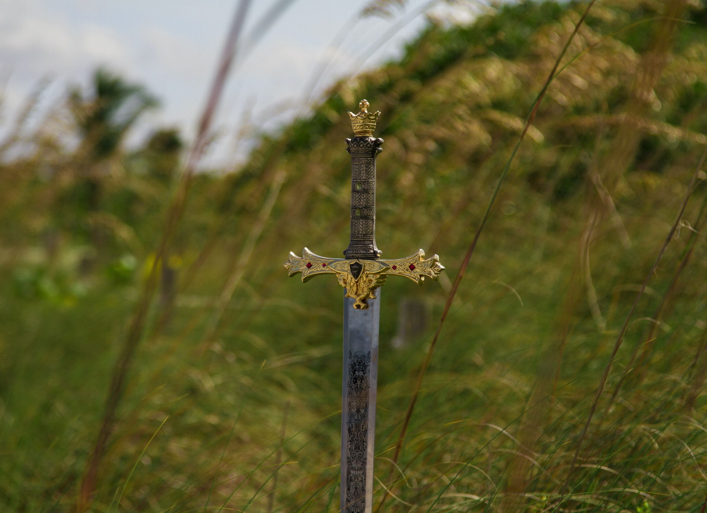
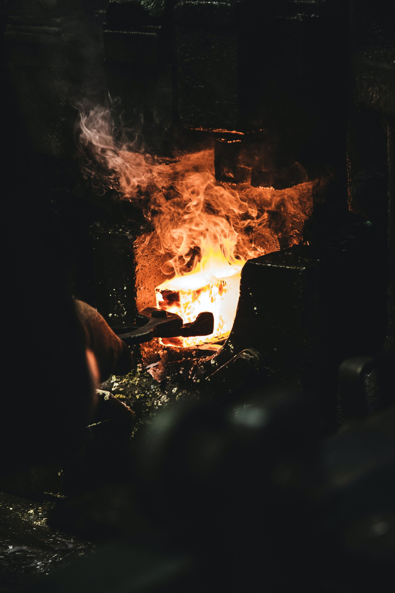
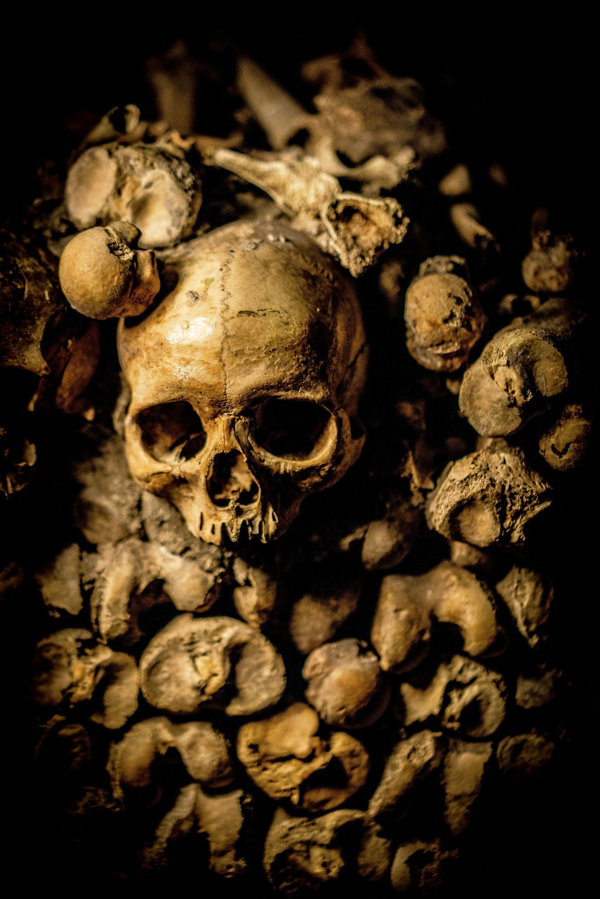

Sirla
Die goldene Sonne Dyrhals.
Ihre Wärme und ihr Licht geben Dyrhal die benötigte Lebenskraft.
Ich bin ein Wirtschaftsinformatiker und Rollenspielbegeisterter aus Dresden.
Hier finden Sie alle Informationen zu meiner mit anderen Pen-&-Paper-Rollenspielen kompatiblen Fantasywelt Dyrhal.
Dyrhal ist eine Mittelalter-Fantasywelt voller Magie und verschiedener Völker. Sie ist dafür ausgelegt, um darin Geschichten zu schreiben und Pen-&-Paper-Rollenspiele zu spielen.
Diese Seite enthält ausschließlich die Besonderheiten der von mir erschaffenen Welt, damit diese möglichst einfach mit anderen Spielsystemen verwendet werden kann.
Die folgenden Abschnitte erklären zum einen die Spielwelt im Detail, zum anderen wie die Inhalte dieser Welt für eigene Zwecke verwendet und verändert werden können.
Alle Inhalte und Kurzgeschichten der Welt Dyrhal sind unter der CC BY-NC-SA-Lizenz veröffentlicht.
Kurzform: Sämtliche Inhalte können für nicht-kommerzielle Zwecke frei verwendet und verändert werden. Wenn Inhalte der Fantasywelt Dyrhal verwendet werden:
Dyrhal and all Dyrhal-related content © 2022 Dr. Frank Effenberger is licensed under CC BY-NC-SA-License.
Die Kurzform ersetzt nicht das Lesen und Zustimmen der vollständigen Lizenzbedingungen.
Die Bilder dieser Website sind frei verwendbar dank der folgenden Künstler: Liste der Künstler.
Hier befinden sich Kurzgeschichten aus Dyrhal:
Es sind keine Kurzgeschichten vorhanden.
Wer in Dyrhal den Himmel schaut, der erkennt im unendlichen Sternenmeer mehrere Himmelskörper.
Die goldene Sonne Dyrhals.
Ihre Wärme und ihr Licht geben Dyrhal die benötigte Lebenskraft.
Die kleine, blaue Sonne Dyrhals.
Pathor war ein Mensch, der zu einem Gott aufstieg und seitdem Hand in Hand um Sirla kreist. Wenn Pathor und Sirla richtig stehen, entsteht im Zwielicht ein wunderbares Farbenspiel aus gemischten Gold- und Blautönen.

Der graue Mond Dyrhals.
Mit seiner Präsenz hat er großen Einfluss auf die Gezeiten und reflektiert das Licht von Sirla und Pathor. Wenn Sirla, Pathor und Maegor in einer Reihe stehen, dann werden unermessliche Kräfte freigesetzt.

Die uns bekannte, materielle Welt.
Der Hauptkontinent trägt den Namen der Göttin des Lebens: Alyria.
Der Nordpol ist die Heimat der vier Urelemente: Feuer, Erde und Wasser bilden ein ineinander greifendes Dreieck, welches darüber von Luft umhüllt wird. Das Zentrum bildet pures Chaos aller überlappender Elemente.
Der Südpol ist wie die südlichen Landmassen in einen undurchdringbaren Nebel gehüllt.
Dyrhal kannte lange Zeit keine Götter. Die heute bekannte Zeitrechnung begann, als zehn Abenteurer zu Göttern aufstiegen und die Welt auseinander brach.
In Dyrhal ist das Anbeten mehrerer Götter zur gleichen Zeit normal.
Die Götter werden aufgeteilt in die fünf Freunde und die fünf Gierigen.
Die fünf Freunde waren eine legendäre Abenteurergruppe, die es gemeinsam schaffte, zu Göttern aufzusteigen.

Die fünf Gierigen waren einzelne Individuen, die ihre Chance nutzen, zu Göttern zu werden.




Der Ursprung und das Ende.
Der Schöpfergott formte, brachte Licht ins Dunkel und war ein Hüter der kosmischen Balance und Neutralität.
Eines Tages zerbrach Aeos in mehrere Splitter, die seither das Universum treiben.
Dyrhal ist einer dieser Splitter.
In Dyrhal begann die Zeitrechnung mit dem Jahr 0 nach dem Aufstieg (NA) der Götter.
Alle Inhalte dieser Website sind vom Jahr 1502 NA als Startpunkt aus geschrieben.
Die Zeitrechnung funktioniert wie folgt:
| Jahreszeit | Monatsnummer |
|---|---|
| Frühling | 3-5 |
| Sommer | 6-9 |
| Herbst | 10-12 |
| Winter | 13-2 |
Die zehn Wochentage sind den Göttern gewidmet:
| Nummer | Tag | Äquivalent |
|---|---|---|
| 1 | Rabtag | Montag |
| 2 | Pathortag | Dienstag |
| 3 | Tameratag | Mittwoch |
| 4 | Gonmirtag | Donnerstag |
| 5 | Alytag | Freitag |
| 6 | Rhoktag | Samstag |
| 7 | Eldalltag | Sonntag |
| 8 | Spinnentag | - |
| 9 | Isratag | - |
| 10 | Ambosstag | - |
Es gibt kein Wochenende. Je nach Glaubensrichtung gönnen sich die Bewohner von Dyrhal einen oder zwei Tage unter der Woche etwas mehr Ruhe.
Jedem Gott ist ein Feiertag im Jahr gewidmet:
| Bezeichnung | Datum | Widmung |
|---|---|---|
| Tag der Sucher | 01.01 | Tausend Raben |
| Kinderfest | 09.03 | Israsil |
| Der große Maskenball | 04.04 | Gonmir |
| Alyfest | 05.05 | Alyria |
| Sommerpathorwende | 02.07 | Pathor |
| Sturmgesang | 07.09 | Eldall |
| Tag des Schaffens | 10.10 | Der schwarze Amboss |
| Erntedank | 03.12 | Tamera |
| Todestag | 08.13 | Die Spinnenmutter |
| Schweinetanz | 06.14 | Rhoknir |
In Dyrhal gibt es sechs große Reiche.
| Stadtname | Besonderheit | Lage im Reich | Statthalter | Wappen |
|---|---|---|---|---|
| Angor Thom | Hauptstadt | Zentral | Ratsherr Dorius Zeugner (Gnom) | Grün mit braunem Pferd |
| Traafast | Hafenstadt | Süden, am Meer | Kondik Wittmane (Zwerg) | Blau mit braunem Schiff |
| Obresa | Handelsstadt am Fluss | Zentral, zwischen Angor Thom und Traafast | Brovuk Stahlhand (Zwerg) | Hellgrün mit einem blauen Fluss |
| Koling | Grenzstadt zu Tharion und Kylar | Südosten | Grem Tringrosh (Halbork) | Weiß mit einer grauen Säule |
| Sohwell | Festung | Osten | Mana Saineka (Adrijh) | Lila mit goldenem Kreis in Mitte |
| Ampus | Ausgrabungsstätte | Nordöstlich von Sohwell | Nillbi Ladlip (Koa) | Weiß mit einer grüne Schlange |
| Stadtname | Besonderheit | Lage im Reich | Marquis | Vicomte | Wappen |
|---|---|---|---|---|---|
| Arcamont | Hauptstadt | Zentral | König Phenrix Discome (Halbelf) | Nicht besetzt | Rot mit goldenem Rahmen, darauf ein brauner Goldbeutel |
| Kupferwacht | Festung mit Berarbeiterdorf (Kupfer) | Westen | Joserath Orinelis (Mensch) | Deelkert Meru (Halbling) | Grün mit einem Drachen in Gold |
| Corin | Bergarbeiterstadt (Gold) | Westlich von Arcamont | Hogbart Uyo (Gnom) | Iekuni Mi (Drachenabstämmige, blau) | Lila mit einem Wolf in Gold |
| Asturcia | Hafenstadt | Zentral-Südlich am Meer | Umidon Grauhals (Halbork) | Mumane Sluc (Koa) | Blau, mit einem goldenem Zyklon |
| Ridia | Hafenstadt | Südosten | Engovar Gilfir (Koa) | Munjeg Yuki (Adrijh) | Gelb mit einem schwarzen Symbol eines Bären |
| Sartos | Kornkammer Dyrhals | Osten | Elvara Farrel (Elf) | Snelver Surata (Koa) | Braun mit einem goldenen Symbol eines Baums |

| Stadtname | Besonderheit | Lage im Reich | Herrscher | Wappen |
|---|---|---|---|---|
| Salantir | Hauptstadt | Zentral | Ministerpräsident Intaro Pleiox (Adrijh) | Sandgelbes Wappen mit zwei lilanen Motonitbergen |
| Thichium | Drogenherstellung | Westen | Vicos Floch (Adrijh) | - |
| Die schwarze Bibliothek | Katalogisierung sämtlichen Wissens | Osten | Hohepriester Visarius (Aleris) | - |
| Ministerium für | Minister | Ort |
|---|---|---|
| Handel | Marsa Wibb (Gnom) | Salantir |
| Magie & Forschung | Fehlar Avos (Hochelf) | Salantir |
| Bau & Finanzen | Ghonkar Thor (Zwerg) | Salantir |
| Gastfreundschaft | Lady Wymar (Adrijh) | Salantir |
| Alchemie | Vicos Floch (Adrijh) | Thichium |
| Stadtname | Besonderheit | Lage im Reich | Vasall | Wappen |
|---|---|---|---|---|
| Dunmar | Hauptstadt | Zentral | König Thorin Kleios (Mensch) | Dunkelblau mit einem goldenen Kriegshammer und hellblauer Sonne Pathors |
| Das arkane Kloster | Ausbildungsstätte, Hort des Wissens | Nordwesten, in den Bergen | Meister Erithic (Mensch) | Dunkelblau mit vier grauen Sonnenstrahlen |
| Die Eisenfestung | Festung | Südwesten, in den Bergen | Cyrus Marsch (Mensch) | Dunkelblau mit einem grauen Turm |
| Sturith | Bergarbeiterstadt (Eisen) | Südwesten | Olkrun der Donnerer (Halbork) | Dunkelblau mit einem grauen Eisenbarren |
| Drowood | Bauernstadt | Zentral, südöstlich Dunmar | Rilitar Lei (Halbelf) | Dunkelblau mit grauer Getreideähre |
| Itasa | Hafenstadt mit Festung | Osten | Nashia Arawin (Halbelf) | Dunkelblau mit einem grauen Dreimaster |

Das alte, sich im Zentrum Dyrhals befindente Reich Kylar ist älter als die Zeitrechnung.
In der Hauptstadt Tharsis schafften es zehn Sterbliche zu Göttern zu werden.
Dieses Ereignis brach die Welt entzwei. In Folge dessen erschufen die Götter gigantische Schutzsäulen um Kylar und schirmten das Reich magisch ab.
Es wurden zahlreiche, erfolglose Versuche unternommen, den magischen Schutz von Kylar zu umgehen und in das Reich einzudringen. Die Magie dieser Säulen konnte seit über 1500 Jahren niemand deuten oder entschlüsseln.
Im Jahr 0 NA wurde mit dem Zerbrechen der Welt eine große Landmasse im südlichen Dyrhal abgetrennt.
Die Götter hüllten dieses Reich in dichten Nebel und gaben ihn damit seinen Namen. Der magische Nebel verhinderte jede Expedition, die das Nebelreich betreten wollte.
Die folgenden neun Organisationen sind reichsübergreifend bekannt.
Das Ziel der schwarzen Bibliothek ist es, sämtliches Wissen von Dyrhal zu sammeln und zu katalogisieren.
Typische Aufträge beinhalten das Sammeln von Artefakten, Zauberbüchern, Einbruch, Beschattung, Erforschung der Welt sowie dem Tausch von Dienstleistungen oder Wissen gegen Wissen.
Der Hohepriester ist im Besitz eines mächtigen Buches: Das sich immer wandelnde Buch von Ghanton saugt alle Informationen auf, mit denen es beschrieben wird. Wer auf der Suche nach Wissen ist, kann beim Blättern des Buches alle Informationen finden, die je in das Buch geschrieben worden.
| Ränge (aufsteigend) |
|---|
| Sucher |
| Schwarzfeder |
| Rabe |
| Das Auge |
| Hohepriester |
Das Ziel der Kirche der blauen Sonne ist es, für Ordnung und Seelenfrieden zu sorgen sowie dunkle Machenschaften ans Licht zu bringen und zu bekämpfen.
Typische Aufträge beinhalten das Nachgehen von Diebstahl, Mord, Berichte von Monstern, das Ermöglichen von Buße und die Bekämpfung bösartiger Organisationen.
Der Patriarch ist im Besitz einer mächtigen Kugel: Die brennende Kugel Pathors soll in der Lage sein, die Nacht in einen Tag zu verwandeln und sämtliche Dunkelheit zu bannen.
| Ränge (aufsteigend) |
|---|
| Neophyt |
| Bruder |
| Pater |
| Abt |
| Patriarch |

Das Ziel des Ordens der heilenden Hand ist es, die Kranken egal welchen Standes zu versorgen und Flüche zu brechen.
Typische Aufträge beinhalten das Sammeln von Heilmitteln, das Ausprobieren neuer Heilverfahren, das Brechen von Flüchen sowie die Unterstützung der Lazarette und Krankenhäuser Dyrhals.
Alyrias Hand ist im Besitz einer mächtigen, goldenen Hand: Die heilende Hand kann bei Kontakt sämtliche Flüche und Gebrechen heilen, während Untote bei Berührung zu Staub zerfallen. Die goldene Hand soll Wesen mit guter Seele wiederbeleben können, selbst wenn sämtliche Hoffnung verloren ist.
| Ränge (aufsteigend) |
|---|
| Gehilfe |
| Heiler |
| Fluchbrecher |
| Priester |
| Alyrias Hand |

Das Ziel der weißen Garde ist es, die Welt zu einem Ort der Gerechtigkeit zu machen.
Typische Aufträge beinhalten Verbrecher der Gerichtsbarkeit zu überführen, die Sorgen und Nöte der Schwachen zu lindern und Bösartiges zu bestrafen.
Der Großinquisitor ist im Besitz eines mächtigen Schwertes: Das Schwert der Gerechtigkeit ist eine mächtige Waffe, kann aber nur von jemanden geführt werden, der damit ein edles und gerechtes Ziel verfolgt. Wer das Schwert der Gerechtigkeit trägt, über den können andere nicht richten.
| Ränge (aufsteigend) |
|---|
| Anwärter |
| Gardist |
| Inquisitor |
| Ritter der Garde |
| Großinquisitor |

Das Ziel der Liga der Handwerker ist es, möglichst viele Handwerker zu vereinigen, um eine solide Verhandlungsbasis gegenüber Händlern zu haben. Die Mitglieder wählen Fürsprecher, die demokratisch mit den Handwerksmeistern den Anführer wählen.
Typische Aufträge beinhalten die Erschaffung von meisterhaften Gegenständen, die Beschaffung seltener Materialien, den Transport wichtiger Gegenstände, sowie den An- und Verkauf von Handwerkswaren.
Die Meister des Handwerks sind im Besitz eines mächtigen Ambosses in Angor Thom (Despval): Auf dem schwarzen Amboss können legendäre, magische Gegenstände gefertigt werden. Der Zugang ist beschränkt auf die Meister des Handwerkes.
| Ränge (aufsteigend) |
|---|
| Mitglied |
| Fürsprecher |
| Ehemaliger Meister des Handwerks |
| Meister des Handwerks |
| Meister der Münze |
Das Ziel des Zirkels der Wildnis ist das Behüten der Natur des Gleichgewichts und die Bekämpfung aller Untoter.
Typische Aufträge beinhalten das Finden und Zerstören von Untoten sowie die Wahrung des Gleichgewichts in der Natur.
Der Erzdruide ist im Besitz eines mächtigen Herzens aus Holz: Das Herz der Wälder soll Wälder davor schützen aus dem Gleichgewicht zu geraten und kann mächtige Hüter der Natur rufen.
| Ränge (aufsteigend) |
|---|
| Wächter |
| Aufseher |
| Freund des Waldes |
| Druide |
| Erzdruide |

Das Ziel des Netzwerkes ist es, als reichsübergreifendes Spionagenetz zu agieren, sodass nichts verborgen bleibt.
Typische Aufträge beinhalten die Einholung von Informationen durch Befragung, Bestechung, Magie und Betrug.
| Ränge (aufsteigend) |
|---|
| Zunge |
| Ohr |
| Hand |
| Herz |
| Kopf |
Das Ziel des ungerechten Zorns ist es, Blut zu vergießen und mehr Schätze und Macht anzuhäufen.
Typische Aufträge beinhalten das Plündern von Dörfern, das Töten von Adligen und Diebstahl von Schätzen.
Der Kriegshäuptling ist im Besitz einer mächtigen, immer blutenden Axt: Diese nach Blut gierende Waffe wird mit jedem getötetem Gegner stärker.
| Ränge (aufsteigend) |
|---|
| Frischling |
| Blutgeweihter |
| Eisenspeer |
| Wutentbrannter |
| Kriegshäuptling |

Das Ziel von Athasaris Gunst ist es, Tod gegen Münze einzutauschen.
Typische AUfträge beinhalten die Erkundung als Vorbereitung sowie den Auftragsmord selbst.
Der Athasari ist im Besitz einer mächtigen Kugel: Die Kugel der Schatten verleiht einer Person wahre Unsichtbarkeit, Lautlosigkeit und die Fähigkeit, niemals Spuren zu hinterlassen.
| Ränge (aufsteigend) |
|---|
| Informant |
| Berater |
| Schatten |
| Klinge |
| Athasari |
Dyrhal wird von vielen Völkern bewohnt. Im Folgenden wird die Herkunft der zumeist Vertretenen überblicksweise aufgelistet.
| Volkname | Herkunft | Sprachen |
|---|---|---|
| Orks | Eriond | Gemeinsprache, Orkisch |
| Menschen | Eriond | Gemeinsprache |
| Elfen | Kylar | Gemeinsprache, Elfisch |
| Zwerge | Despval | Gemeinsprache, Zwergisch |
| Gnome | Despval | Gemeinsprache, Gnomisch |
| Halblinge | Kylar | Gemeinsprache, Halblingisch |
| Drachenabstämmige (Echsenartige) | Das ehemalige Nebelreich | Gemeinsprache, Drachensprache |
| Dunkelbewohner (Satyrartige) | Die Höhlen unter Dyrhal | Gemeinsprache, Satyrisch |
| Koa (Rabenartige) | Tharion | Gemeinsprache, Koati |
| Aleris (Adlerartige) | Das ehemalige Nebelreich | Gemeinsprache, Alerisch |
| Adrijh (Fuchsartige) | Die Adrijh-Inseln | Gemeinsprache, Adrijhit |
| Alle Halbvölker | Dyrhal | Gemeinsprache, alle Sprachen beider Völker |
| und viele mehr | Dyrhal | - |
Es gibt Kupfer-, Silber-, Gold- und Platinmünzen, mit denen überall in Dyrhal gehandelt wird.
So wie es zehn Götter gibt, erfolgt die Umrechnung erfolgt über den Faktor 10:
| Münzart | Kupfermünze(n) | Silbermünze(n) | Goldmünze(n) | Platinmünze(n) |
|---|---|---|---|---|
| 1 Kupfermünze | 1 | - | - | - |
| 1 Silbermünze | 10 | 1 | - | - |
| 1 Goldmünze | 100 | 10 | 1 | - |
| 1 Platinmünze | 1000 | 100 | 10 | 1 |
Es gibt landestypische Prägungen der Münzen mit dem Antlitz des Reichsoberhauptes.
Größere Geldmengen werden als eingeschmolzene Barren transportiert.
Die durch das Universum treibenden Splitter von Aeos formen und beeinflussen das Multiversum.
Die Welten, die diese Splitter formten, können mithilfe mächtiger Magie erreicht werden.
Die Splitter werden in vier Kategorien aufgeteilt:
| Splittername | Domäne | Besonderheit | Gegensplitter |
|---|---|---|---|
| Thimosi | Leben | Ursplitter | Athasari (Tod) |
| Elia | Licht | Hauptsplitter von Thimosi (Leben) | Salrar (Finsternis) |
| Isyr | Ordnung | Hauptsplitter von Thimosi (Leben) | Ythus (Chaos) |
| Thania | Gemeinwohl | Hauptsplitter von Thimosi (Leben) | Ilgareg (Gier) |
| Iderna | Gnade | Nebensplitter von Isyr (Ordnung) und Thania (Gemeinwohl) | Rizesch (Rücksichtslosigkeit) |
| Splittername | Domäne | Besonderheit | Gegensplitter |
|---|---|---|---|
| Athasari | Tod | Ursplitter | Thimosi (Leben) |
| Salrar | Finsternis | Hauptsplitter von Athasari (Tod) | Elia (Licht) |
| Ythus | Chaos | Hauptsplitter von Athasari (Tod) | Isyr (Ordnung) |
| Ilgareg | Gier | Hauptsplitter von Athasari (Tod) | Thania (Gemeinwohl) |
| Thelkuun | Egoismus | Nebensplitter von Ythus (Chaos) und Ilgareg (Gier) | Lyvi (Altruismus) |
| Splittername | Domäne | Besonderheit | Gegensplitter |
|---|---|---|---|
| Lyvi | Altruismus | Nebensplitter von Ythus (Chaos) und Thania (Gemeinwohl) | Thelkuun (Egoismus) |
| Rizesch | Rücksichtslosigkeit | Nebensplitter Isyr (Ordnung) und Ilgareg (Gier) | Iderna (Gnade) |
| Splittername | Domäne | Besonderheit |
|---|---|---|
| Nirus | Balance | Alles |
| Xtuth | Der große Filter | Nichts |
Zusatzinformationen zur Welt.
Angaben gemäß § 5 TMG
Verantwortlich für den Inhalt nach § 55 Abs. 2 RStV
Dr. Frank Effenberger
Helmholtzstraße 4
01069 Dresden
Deutschland
Vertreten durch
Dr. Frank Effenberger
Dr. Frank Effenberger
Helmholtzstraße 4
01069 Dresden
Germany
Substitute
Dr. Frank Effenberger
Verantwortliche Stelle für Datenverarbeitung nach Art. 4 Abs. 7 DSGVO
Dr. Frank Effenberger
Helmholtzstraße 4
01069 Dresden
Deutschland
Vertreten durch
Dr. Frank Effenberger
TLS-Verschlüsselung mit https / DNSSEC
Zur Umsetzung von Art. 25 Abs. 1 DSGVO verwendet diese Website eine SSL- bzw. TLS-Verschlüsselung zur Datenübertragung (https). Diese Domain nutzt DNSSEC.
Sie haben Rechte auf:
Verweis auf Dritte
Diese Website verwendet Github Pages.
Dies ist ein Webhosting-Dienst der GitHub, Inc., 88 Colin P Kelly Jr St, San Francisco, CA 94107, USA ("GitHub") und innerhalb der europäischen Union GitHub B.V., Vijzelstraat 68-72, 1017 HL Amsterdam, The Netherlands.
GitHub ist teil des Privacy Shield und hat sich den Datenschutzvorgaben der EU verpflichtet.
GitHub kann als Web Hoster folgende personenbezogene Daten erheben:
Sie können die verantwortliche Stelle für personenbezogene Datenverarbeitung bei Github hier erreichen:
Datenschutzkontakt bei Github
Sämtliche weiterführenden datenschutzrechtlich relevanten Informationen bezüglich Github finden Sie unter: Datenschutzerklärung von Github.
Wenn Sie mir eine E-Mail mit personenbezogenen Daten schicken, werden diese personenbezogenen Daten für die notwendige Dauer der Korrespondenz auf den E-Mailervern der 1&1 Mail & Media GmbH gespeichert. Wenn Sie mir ihre E-Mail und Anhänge mithilfe meines in den Kontaktdaten angegeben Open PGP Schlüssels verschlüsseln und keine personenbezogenen Daten im Betreff, Header oder Mailadresse enthalten sind, kann die 1&1 Mail & Media GmbH ihre personenbezogenen Daten nicht einsehen.
Die 1&1 Mail & Media GmbH ist ein deutsches Unternehmen mit Hauptsitz in Montabaur, bietet u.A. E-Maildienstleistungen an und ist den Datenschutzvorgaben der EU verpflichtet.
Die Grundlage für die personenbezogene Datenverarbeitung ist Art 6. Abs. 1 littera f DSGVO. Die 1&1 Mail & Media GmbH muss dies tun, damit die von Ihnen geschriebene E-Mail mit all ihren Inhalten von mir abgerufen werden kann.
Die rechtliche Grundlage für die 1&1 Mail & Media GmbH ist in diesem Kontext Art. 6 Abs. 1 littera b DSGVO.
Bei Beendigung der Korrespondenz auf Basis der oben genannten Gesetzesgrundlage werden alle von Ihnen an mich übermittelten personenbezogenen Daten von mir auf den E-Mailservern gelöscht.
Sofern die 1&1 Mail & Media GmbH dazu gesetzlich verpflichtet ist oder Dritte von der 1&1 Mail & Media GmbH personenbezogene Daten im Auftrag verarbeiten, werden die personenbezogene Daten an Dritte übertragen.
Sämtliche Informationen zum Datenschutz und Ansprechpartnern bei der 1&1 Mail & Media GmbH finden sie hier: Datenschutzerklärung von 1&1 Mail & Media GmbH und Auftragsverarbeitungsvereinbarung von 1&1 Mail & Media GmbH
Controller for processing of personal data (Art. 4 Section 7 GDPR)
Dr. Frank Effenberger
Helmholtzstraße 4
01069 Dresden
Germany
Substitute
Dr. Frank Effenberger
TLS-Encryption with https / DNSSEC
Based on Art. 25 Section 1 GDPR, this website uses a SSL/TLS encryption for the transmission of data (https). DNSSEC is used for this domain.
You have the rights to:
Third Party Inclusion
This website is using Github Pages.
This is a webhosting service of GitHub, Inc., 88 Colin P Kelly Jr St, San Francisco, CA 94107, USA ("GitHub") and in the European Union GitHub B.V., Vijzelstraat 68-72, 1017 HL Amsterdam, The Netherlands.
GitHub is part of the privacy shield and has declared compliance to the GDPR.
GitHub can collect the following PII as web hoster:
You can contact the data processor at Github via this site:
Data Privacy Contact at Github
All further information regarding privacy regulations on Github can be found here: Data Privacy Statement of Github.
If you send me an e-mail with PII, this PII will be stored on e-mail servers of the 1&1 Mail & Media GmbH for the duration of the correspondence. If you sent me PII via e-mail in encrypted form with encrypted attachments by using my Open PGP Key in the contact data and by not using any PII on the subject, header or e-mail address, the 1&1 Mail & Media GmbH has no access to your PII.
The 1&1 Mail & Media GMbH is a German business located in Montabaur, offers e-mail services and has declared compliance to the GDPR.
The basis for PII data processing is Art 6. Section 1 littera f GDPR. The 1&1 Mail & Media GmbH has to do this so that the e-mail you have written with all its content can be accessed by me.
The legal basis for the 1&1 Mail & Media GmbH in this context is Art. 6 Section 1 littera b GDPR.
Upon termination of the correspondence on the basis of the above-mentioned legal basis, I will delete all of your PII sent to me on the e-mail servers.
If legally obliged or third parties of the 1&1 Mail & Media GmbH are processing PII, the 1&1 Mail & Media GmbH will process and send PII to the other third parties.
You can find all information on data protection and contact persons at the 1&1 Mail & Media GmbH here: Data Privacy Statement of the 1&1 Mail & Media GmbH and Data Processing Agreement of the 1&1 Mail & Media GmbH